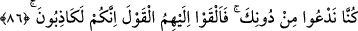
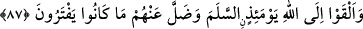
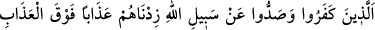
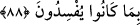

86. (Allah’a) ortak koşanlar, ortak koştukları şeyleri gördükleri zaman derler ki:
“Rabbimiz! İşte bunlar, seni bırakıp da tapmış olduğumuz ortaklarımızdır.” Onlar
da bunlara: “Siz mutlaka yalancılarsınız” diye söz atarlar.
Allah’a “ortak koşanlar, ortak koştukları şeyleri” taptıkları putları “gördükleri
zaman derler ki: “Rabbimiz! İşte bunlar, seni” sana ibâdeti “bırakıp da tapmış
olduğumuz ortaklarımızdır.” Yâni ortak yaptığımız ilahlarımızdır. Bu, onların kendi
ifâdeleriyle hatâ ettiklerini gösteren bir îtiraf ve azabın taptıkları putlarla kendi
aralarında paylaştırılmasını talep etmeleri demektir.
“Onlar” yâni ortak koştukları putlar “da bunlara:” Ey müşrikler! “Siz” bizim
Allah’ın ortakları olduğumuzu iddiâ etmeniz konusunda “mutlaka yalancılarsınız”
Çünkü biz size, bize ibâdet etmenizi emretmedik. Bizler, sizden ve sizin hallerinizden
tamâmen uzak olarak Allah’ı tesbih ve ona ibâdette meşguldük. Nitekim Allah Teâlâ:
“Ona hamd ile tesbih etmeyen hiçbir şey yoktur.” (el-İsra, 17/44) buyuruyor. “diye
söz atarlar.” Yâni Allah o putları konuşturur ve onları tekzib ederek böyle söylerler.
87. O gün Allah’a teslim (bayrağını) çekerler ve uydurmakta oldukları şeyler
onlardan kaybolup gider.
Müşrikler, dünyada Allah’a karşı büyüklük tasladıktan sonra “O gün Allah’a teslim
(bayrağını) çekerler” Allah’ın hükmüne boyun eğip teslim olurlar.
İş işten geçtikten sonra feryad ne fayda eder?
“Ve” putların Allah’ın ortakları olduğu, onların kendilerine yardım ve şefâat edeceği
şeklinde “uydurmakta oldukları şeyler onlardan kaybolup gider.” Bu ise putlar
kendilerini tekzib edip onlardan uzak olduklarını beyan ettikleri zaman gerçekleşir.
88. İnkâr edip de (insanları) Allah yolundan alıkoyanlar var ya, işte onlara
yapmakta oldukları bozgunculuklar sebebiyle, azaplarını kat kat artıracağız.
Kendileri “inkâr edip de” başkalarını da İslam’dan men edip küfre zorlamak
sûretiyle “Allah yolundan alıkoyanlar var ya, işte onlara yapmakta oldukları